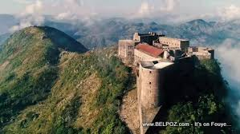

Milot
 (Milo en créole haïtien) est une commune d'Haïti située dans le département du Nord et dans
l'arrondissement d'Acul-du-Nord.
(Milo en créole haïtien) est une commune d'Haïti située dans le département du Nord et dans
l'arrondissement d'Acul-du-Nord.
La commune de Milot est de position intérieure. Son relief est à la fois dominé par les mornes et par les plaines.
De par sa position géographique, la commune de Milot jouit d’un climat normal.La commune de Milot est subdivisée
en trois (3) sections communales. Elle a un (1) quartier, Carrefour des Pères, qui relève de la section communale
3e Genipailler. La commune de Milot a au moins deux (2)localités et soixante dix (70) habitations. La commune de
Milot est bornée au nord par la commune du Cap-Haïtien ; au sud,par la communede Dondon ; à l’est par les communes
de Quartier-Morin et de Grande Rivière du Nord et à l’ouest, par la commune de Plaine du Nord.Les habitants de la
commune de Milot s’appellent milotiens, milotiennes. Ils célèbrent la fête patronale, Immaculée Conception, chaque
8 décembre.Elevée au rang de commune en 1821, la commune de Milot fait son entrée dans l’histoire du pays en 1805
avec l’arrivée du général Henry Christophe.Elle fut baptisée « Ville de Sans-Souci », car Christophe connu sous le
nom de Henri 1er avait fait construire son palais « Palais de Sans Souci » dans la région. commune de Milot garda
ce nom jusqu’en 1811. Plus tard, elle reçut le nom de « Milot », qui était le nom d’un colon français très influent
appelé « François Milot ».
La commune de Milot est la plus visitée par les touristes haïtiens et étrangers. Elle a de remarquables monuments
historiques tels que la Citadelle, le Palais Sans-Souci, l’Eglise Catholique, etc.
MILOT - ENQUETES
En 2005, la population de la commune de Milot était estimée à 25 259 habitants dont 79,6% réside en milieu rural. Le
rapport de masculinité (96 hommes pour 100 femmes) traduisait une supériorité numérique de la population féminine sur
les hommes. Pour une superficie de 72 km2, la densité était évaluée à 353 habitants/km2. Pendant la période intercensitaire,
1982-2003, la population de la commune a connu un taux moyen d’accroissement annuel de 1,4 %. La répartition de la population
de la commune de Milot par grands groupes d’ages présente la structure suivante : 38,1% de la population ont moins de 15 ans,
55,7% sont âgées de 15 et 64 ans et 6,2% de 65 ans et plus. Sur le plan éducatif, cinquante quatre (54) établissements scolaires
ont été inventoriés dans la commune. De ce nombre, on trouve trois (3) écoles préscolaires, quarante quatre (44) établissements
primaires et sept (7) écoles secondaires. Quarante et un (41) écoles répertoriées (41) appartiennent au secteur privé, six (6) sont
de type communautaire et les sept (7) autres sont publiques. Cinq (5) centres d’alphabétisation et quatre (4) institutions techniques
et professionnelles complètent les infrastructures éducatives de la commune.
Citadelle La ferrière
 La Citadelle La ferrière est un ouvrage militaire construit au début du xixe siècle à Milot en Haïti dans le département du Nord, par Henri Christophe. C'est la plus grande forteresse du continent américain1 : à 900 mètres d'altitude, elle se trouve à 15 km au sud de Cap-Haïtien, au sein du Parc National Historique - Citadelle, Sans Souci, Ramiers classé au patrimoine mondial de l'UNESCO depuis 1982. La forteresse [archive] pouvait abriter une garnison de 2 000 hommes, 5 000 en cas de nécessité.La forteresse est construite après l'indépendance en 1804 pour défendre la partie nord de l'île d'Haïti contre un éventuel retour des Français. 20 000 personnes participent aux travaux de construction qui durent quatorze années. Il est à noter que 2000 de ces travailleurs périssent au cours de la construction. Ce « sang mélangé au mortier de l'édifice » est la cause de la solidité de la Citadelle, selon les guides touristiques haïtiens.
Les bâtiments ont été en partie détruits par le tremblement de terre de 1842. Des travaux de reconstruction, menés par l'Institut de sauvegarde du patrimoine national (ISPAN) ont permis de sauvegarder ce patrimoine.
Une plaque a été déposée vers 1990 pour rappeler aux Haïtiens visitant ce lieu que le roi Henri Ier, qui s'était suicidé le 8 novembre 1820 au palais de Sans-Souci, a été enterré en sa Citadelle. Ce lieu a une valeur patriotique importante aux yeux des Haïtiens.
Palais sans souci
 Le Palais Sans Souci1 est un château situé à Milot, en Haïti, dans le département du Nord, au sein du parc national historique -
Citadelle, Sans Souci, Ramiers, à une vingtaine de km au sud de Cap-Haitien. C'est l'ancienne résidence principale d'Henri Christophe.
Le Palais Sans Souci1 est un château situé à Milot, en Haïti, dans le département du Nord, au sein du parc national historique -
Citadelle, Sans Souci, Ramiers, à une vingtaine de km au sud de Cap-Haitien. C'est l'ancienne résidence principale d'Henri Christophe.
Ce palais ainsi que ses dépendances ont été construits à partir de 1810, sous l'impulsion du général Henri Christophe, l'un des héros de la guerre de l'indépendance haïtienne, autoproclamé roi sous le nom de Henri Ier en mars 1811 de la moitié nord de l'actuelle Haïti dont la capitale était Cap-Haïtien renommée Cap-Henri. Les travaux sont achevés en 1813. Outre le corps principal, sont également construites une chapelle avec une large coupole, et de nombreuses annexes : caserne, hôpital, ministères, imprimerie, hôtel des monnaies, école, académie d'art, ferme, etc.2. Henri, son épouse la reine Marie-Louise et leurs enfants — dont Victor-Henry Christophe — ont habité ce lieu, ainsi que leurs personnels et les différents conseillers et ministres, jusqu'au 18 octobre 1820, date du début de la fin du Royaume d'Haïti puis de son rattachement à la partie sud du pays.
Le roi a été secondé pour l'élévation de son palais par le baron Pompée Valentin Vastey, membre de son conseil privé, et le nom de l'architecte serait Chery Marie-Wallock [?] ou Henri Besse, chef du génie militaire3. Le terrain choisi avait été une plantation française, confisquée par les indépendantistes et que Christophe avait ensuite géré lui-même, en entrepreneur, y imposant un régime de fer, couvrant son pays de raffineries de sucre, sa principale source de revenus. Le roi possédait dix-neuf autres plantations et avait fait construire d'autres résidences, ainsi que des fortins, à travers son royaume, dont la citadelle La Ferrière, située à quelques kilomètres du palais, et armée de 200 canons. La situation géographique de cette résidence royale et de la citadelle s'explique sur le plan stratégique : ce dispositif est à la fois central et surélevé, dissimulé et parfaitement autonome, il permet au souverain de contrôler son territoire et de se prémunir de ses ennemis intérieurs et extérieurs, dont les Français, qui ne cesseront de vouloir reprendre leur ancienne colonie comme en témoigne la tentative de débarquement de 1814-1815, commanditée par Louis XVIII4.
Le palais et ses dépendances furent ruinés par deux séries de violents séismes, celui du 7 mai 1842 qui détruisit Cap-Haïtien, puis le tremblement de terre de février 18432, et jamais reconstruits. Depuis 1982, les vestiges du palais sont inscrits sur la liste du Patrimoine mondial de l'UNESCO. En février 2015, un rapport de l'Icomos recommande le renforcement et la restauration de plusieurs structures du site.